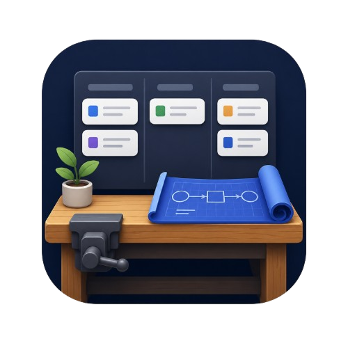

<!doctype html>
<html lang="en">
<head>
<meta charset="UTF-8" />
<meta name="viewport" content="width=device-width, initial-scale=1.0" />
<title>Project workbench</title>
<link rel="icon" type="image/x-icon" href="images/Project_Workbench-small.ico">
<link rel="stylesheet" href="styles.css" />
<style>
  html, body, #root { height: 100%; margin: 0; }
  body { background: #EEF2F0; }
</style>
</head>
<body>
<div id="root"></div>

<script crossorigin src="https://unpkg.com/react@18/umd/react.production.min.js"></script>
<script crossorigin src="https://unpkg.com/react-dom@18/umd/react-dom.production.min.js"></script>
<script crossorigin src="https://unpkg.com/@babel/standalone/babel.min.js"></script>

<script type="text/plain" id="app-source">
const { useState, useEffect, useRef } = React;

/* ---------------------------------------------------------
   ICONS — minimal inline SVGs (standalone build has no
   lucide-react dependency, keeping this a single file)
--------------------------------------------------------- */
function Icon({ children, size = 16, strokeWidth = 2 }) {
  return (
    <svg width={size} height={size} viewBox="0 0 24 24" fill="none"
         stroke="currentColor" strokeWidth={strokeWidth}
         strokeLinecap="round" strokeLinejoin="round">
      {children}
    </svg>
  );
}
function Plus(props) { return <Icon {...props}><line x1="12" y1="5" x2="12" y2="19" /><line x1="5" y1="12" x2="19" y2="12" /></Icon>; }
function ChevronLeft(props) { return <Icon {...props}><polyline points="15 18 9 12 15 6" /></Icon>; }
function Trash2(props) { return <Icon {...props}><polyline points="3 6 5 6 21 6" /><path d="M19 6l-1 14a2 2 0 0 1-2 2H8a2 2 0 0 1-2-2L5 6" /><path d="M10 11v6" /><path d="M14 11v6" /><path d="M9 6V4a1 1 0 0 1 1-1h4a1 1 0 0 1 1 1v2" /></Icon>; }
function X(props) { return <Icon {...props}><line x1="18" y1="6" x2="6" y2="18" /><line x1="6" y1="6" x2="18" y2="18" /></Icon>; }
function LinkIcon(props) { return <Icon {...props}><path d="M10 13a5 5 0 0 0 7.07 0l1.93-1.93a5 5 0 0 0-7.07-7.07L10.5 5.5" /><path d="M14 11a5 5 0 0 0-7.07 0L4.99 12.93a5 5 0 0 0 7.07 7.07L13.5 18.5" /></Icon>; }
function Download(props) { return <Icon {...props}><path d="M21 15v4a2 2 0 0 1-2 2H5a2 2 0 0 1-2-2v-4" /><polyline points="7 10 12 15 17 10" /><line x1="12" y1="15" x2="12" y2="3" /></Icon>; }
function Sparkles(props) { return <Icon {...props}><path d="M12 3v4M12 17v4M3 12h4M17 12h4M5.6 5.6l2.8 2.8M15.6 15.6l2.8 2.8M18.4 5.6l-2.8 2.8M8.4 15.6l-2.8 2.8" /></Icon>; }
function KeyRound(props) { return <Icon {...props}><circle cx="8" cy="15" r="4" /><path d="M10.5 12.5 19 4M17 6l2 2M14 9l2 2" /></Icon>; }
function Settings(props) { return <Icon {...props}><circle cx="12" cy="12" r="3" /><path d="M19.4 15a1.65 1.65 0 0 0 .33 1.82l.06.06a2 2 0 1 1-2.83 2.83l-.06-.06a1.65 1.65 0 0 0-1.82-.33 1.65 1.65 0 0 0-1 1.51V21a2 2 0 0 1-4 0v-.09A1.65 1.65 0 0 0 9 19.4a1.65 1.65 0 0 0-1.82.33l-.06.06a2 2 0 1 1-2.83-2.83l.06-.06A1.65 1.65 0 0 0 4.68 15a1.65 1.65 0 0 0-1.51-1H3a2 2 0 0 1 0-4h.09A1.65 1.65 0 0 0 4.6 9a1.65 1.65 0 0 0-.33-1.82l-.06-.06a2 2 0 1 1 2.83-2.83l.06.06A1.65 1.65 0 0 0 9 4.68a1.65 1.65 0 0 0 1-1.51V3a2 2 0 0 1 4 0v.09a1.65 1.65 0 0 0 1 1.51 1.65 1.65 0 0 0 1.82-.33l.06-.06a2 2 0 1 1 2.83 2.83l-.06.06A1.65 1.65 0 0 0 19.4 9a1.65 1.65 0 0 0 1.51 1H21a2 2 0 0 1 0 4h-.09a1.65 1.65 0 0 0-1.51 1z" /></Icon>; }


/* ---------------------------------------------------------
   CONSTANTS — derived from the source planning template
--------------------------------------------------------- */

const DEFAULT_TEAMS = [
  "None", "Unassigned", "Architecture", "BI/Reporting", "Internal Development",
  "Clinical", "Finance", "Integration", "Insurance", "Patient", "Slams", "Curve Capture",
];

const PROJECT_STATUSES = [
  "Unreleased", "Paused", "In Beta", "Closing", "Released", "Limited Release", "GA Rollout",
];

const SIZES = ["S", "M", "L", "XL", "XXL"];

const TASK_STATUSES = ["Not started", "In Progress", "In Review", "N/A", "Done"];

const TASK_STATUS_STYLE = {
  "Not started": { fg: "var(--ink-faint)", bg: "transparent", border: "var(--hairline)" },
  "In Progress": { fg: "var(--brass)", bg: "var(--brass-10)", border: "var(--brass)" },
  "In Review": { fg: "var(--ink)", bg: "var(--sand)", border: "var(--ink-faint)" },
  "N/A": { fg: "var(--ink-faint)", bg: "transparent", border: "var(--hairline)" },
  "Done": { fg: "var(--teal)", bg: "var(--teal-10)", border: "var(--teal)" },
};

const PHASES = ["Charter", "Beta", "GA", "Close"];

const DEFAULT_CHECKLIST = {
  Charter: [
    ["Add item to Project Status Chart", "Project Status Chart"],
    ["Address what problem we are solving", ""],
    ["Initiate the Project Charter", "PR702A"],
    ["Initiate Project Journal", ""],
    ["Prepare Risk Assessment", "QR707A — document can be started early, but review periodically through the project"],
    ["Create Work Breakdown Structure (WBS) for project", ""],
    ["Project Kick Off", ""],
  ],
  Beta: [
    ["Prepare the Beta Release Document", "PR707D — itself a checklist; prepare early so release cards are set up properly"],
    ["Prepare Release Notes", "Start to paint the picture of what we are building"],
    ["Prepare Beta Validation Record — Design and Requirements", "PR707A"],
    ["Prepare Beta Validation Record — Beta Validation", "PR707A"],
    ["Validation NDA required?", "PR707B"],
    ["Beta customer list preparation", "Validate with stakeholders"],
    ["Sales and Training instances enabled into Beta?", ""],
    ["Create in-product feedback link cards (if necessary)", ""],
    ["Create Beta label cards (if necessary)", ""],
    ["Create Community cards", ""],
    ["Product Manager review", "As per PR707D"],
    ["Live session with CS team", "Include the technical writer, training script writer, and support management team"],
    ["Staged Beta rollout?", "Determine if a staged rollout plan is needed"],
    ["Pre-Beta release customer communication", "Work with Marketing to distribute via email"],
    ["Beta enabled communication", "Pendo messaging"],
    ["Approval of Beta release", ""],
  ],
  GA: [
    ["Update Project Status Chart", ""],
    ["Prepare the Approval of Release Document", "PR708A — enter all relevant fields prior to approval"],
    ["Update Release Notes", ""],
    ["Update Validation Activity Records", ""],
    ["Remove in-product feedback links from Beta (if necessary)", ""],
    ["Remove Beta labels (if necessary)", ""],
    ["Staged GA rollout?", "Determine if a staged rollout plan is needed"],
    ["Complete the Approval of Release Document", ""],
    ["Pre-GA release customer communication", "Work with Marketing to distribute via email"],
    ["GA enabled communication", "Pendo messaging"],
    ["Approval of GA release", ""],
    ["Internal employee communication", "Let the team share in the win"],
    ["Update Release Calendar", ""],
    ["Release [GA] FixVersion in Jira", ""],
  ],
  Close: [
    ["Wrap up cards", ""],
    ["Release [CLOSE] FixVersion in Jira", ""],
    ["Project retrospective", ""],
  ],
};

const uid = () => Math.random().toString(36).slice(2, 10) + Date.now().toString(36);

// Reads an image file and downscales it to a JPEG data URL before it's
// stored. Project images are saved inline (no file storage available here),
// so keeping each one small matters — an unresized photo could eat a large
// chunk of the storage budget on its own.
function readAndResizeImage(file, maxWidth) {
  return new Promise((resolve, reject) => {
    const reader = new FileReader();
    reader.onerror = () => reject(new Error("Couldn't read that file."));
    reader.onload = () => {
      const img = new Image();
      img.onerror = () => reject(new Error("That doesn't look like a readable image."));
      img.onload = () => {
        const scale = Math.min(1, (maxWidth || 900) / img.width);
        const canvas = document.createElement("canvas");
        canvas.width = Math.round(img.width * scale);
        canvas.height = Math.round(img.height * scale);
        const ctx = canvas.getContext("2d");
        ctx.drawImage(img, 0, 0, canvas.width, canvas.height);
        resolve(canvas.toDataURL("image/jpeg", 0.82));
      };
      img.src = reader.result;
    };
    reader.readAsDataURL(file);
  });
}

function freshChecklist() {
  const out = {};
  PHASES.forEach((phase) => {
    out[phase] = DEFAULT_CHECKLIST[phase].map(([task, description]) => ({
      id: uid(), task, description, status: "Not started", link: "", note: "",
    }));
  });
  return out;
}

function freshProject(name, defaultTeam) {
  return {
    id: uid(),
    name: name || "Untitled project",
    team: defaultTeam || "Unassigned",
    status: "Unreleased",
    size: "M",
    priority: 3,
    image: "",
    createdAt: Date.now(),
    updatedAt: Date.now(),
    brief: {
      winningDeliverable: "", problemStatement: "", strategyFit: "", themeTie: "",
      whyImportant: "", whyNow: "", successMetrics: "", constraints: "",
      whatWeKnow: "", whatWeNeedToAnswer: "",
    },
    fiveWhys: { problem: "", whys: ["", "", "", "", ""], rootCause: "", opportunity: "" },
    jtbd: [],
    northStar: "",
    checklist: freshChecklist(),
    chats: { Brief: [], FiveWhys: [], Jtbd: [], NorthStar: [] },
  };
}

function applyChecklistStatuses(checklist, statusesByPhase) {
  const out = {};
  PHASES.forEach((phase) => {
    const statuses = statusesByPhase[phase] || [];
    out[phase] = checklist[phase].map((item, i) => ({
      ...item,
      status: statuses[i] || item.status,
    }));
  });
  return out;
}

// Projects saved before the conversational agents existed won't have a
// `chats` field yet. Fill it in on load so older saved data doesn't crash
// the new UI.
function normalizeProject(p) {
  // Handles data saved by earlier versions of this app:
  //  - pre-agent projects had no `chats` field at all
  //  - projects saved between the agent feature and the Poster->Brief
  //    rename have `poster` (not `brief`) and `chats.Poster` (not
  //    `chats.Brief`)
  // Without this, an old project's `brief` is undefined and the Brief
  // tab crashes trying to read fields off it.
  const brief =
    p.brief ||
    p.poster || {
      winningDeliverable: "",
      problemStatement: "",
      strategyFit: "",
      themeTie: "",
      whyImportant: "",
      whyNow: "",
      successMetrics: "",
      constraints: "",
      whatWeKnow: "",
      whatWeNeedToAnswer: "",
    };
  const oldChats = p.chats || {};
  const chats = {
    Brief: oldChats.Brief || oldChats.Poster || [],
    FiveWhys: oldChats.FiveWhys || [],
    Jtbd: oldChats.Jtbd || [],
    NorthStar: oldChats.NorthStar || [],
  };
  const { poster, ...rest } = p;
  return { image: "", ...rest, brief, chats };
}

/* ---------------------------------------------------------
   DEMO DATA — seeds first-time visitors with two example
   projects at different gate stages, so the tool isn't a
   blank page. Fully editable and deletable like any project.
--------------------------------------------------------- */

function demoProjects() {
  const day = 86400000;
  const now = Date.now();

  const curveExport = {
    id: uid(),
    name: "Example: CGM Curve Export API",
    team: "Curve Capture",
    status: "In Beta",
    size: "L",
    priority: 4,
    createdAt: now - 34 * day,
    updatedAt: now - 1 * day,
    brief: {
      winningDeliverable: "A patient can pull their glucose curve history into any care app they already use, without a support ticket.",
      problemStatement: "Clinics and third-party apps keep asking for raw curve data, and today the only path is a manual export the patient has to request from support.",
      strategyFit: "Opens the platform to the broader care ecosystem, which is one of this year's stated themes.",
      themeTie: "Yes — Open Platform theme.",
      whyImportant: "Removes a recurring support burden and unblocks two partner integrations that are currently stalled.",
      whyNow: "Two partner deals are contractually waiting on this API before they'll sign.",
      successMetrics: "80% reduction in manual export tickets within one quarter of GA. At least 5 partner integrations live within two quarters.",
      constraints: "Read-only for v1. No write-back to the device record. Must stay within existing rate limits.",
      whatWeKnow: "Support logs 40-60 manual export requests a month. Partner teams have already scoped their side against our draft schema.",
      whatWeNeedToAnswer: "Whether historical data older than 12 months needs to be included in v1, or can follow later.",
    },
    fiveWhys: {
      problem: "Why do patients want their curve data outside the app?",
      whys: [
        "Because their care team uses a separate dashboard that doesn't talk to us.",
        "Because that dashboard is where the clinic already reviews all their other vitals.",
        "Because switching context between two apps during a visit wastes appointment time.",
        "Because appointment time is short and the clinician wants one screen, not two.",
        "Because ultimately the patient just wants their care team to have the full picture without extra steps on anyone's part.",
      ],
      rootCause: "Curve data is trapped in a single app when care actually happens across several systems at once.",
      opportunity: "Let the data follow the patient into whatever system their care team already trusts.",
    },
    jtbd: [
      {
        id: uid(),
        situation: "I'm a clinic administrator setting up a new patient in our EHR",
        motivation: "pull in their existing curve history automatically",
        outcome: "I can review trends on day one instead of waiting weeks for new data to accumulate",
        emotionalJob: "confident I'm not missing context on a new patient",
        socialJob: "someone who runs a well-integrated, modern practice",
      },
    ],
    northStar: "Every patient's curve history is available wherever their care actually happens, with zero manual export requests.",
    checklist: applyChecklistStatuses(freshChecklist(), {
      Charter: ["Done", "Done", "Done", "Done", "Done", "Done", "Done"],
      Beta: ["Done", "Done", "Done", "Done", "Done", "Done", "In Progress", "In Progress", "In Progress", "Not started", "Not started", "Not started", "Not started", "Not started", "Not started", "Not started"],
      GA: [],
      Close: [],
    }),
    chats: {
      Brief: [
        { id: uid(), role: "user", text: "We want to let patients export their glucose curve history to other apps." },
        { id: uid(), role: "assistant", text: "Good starting point. Who actually asks for this today, patients directly, or their clinics? And what do they currently have to do to get that data out?" },
        { id: uid(), role: "user", text: "Mostly clinics, on behalf of patients. Right now it's a manual support ticket." },
      ],
      FiveWhys: [],
      Jtbd: [],
      NorthStar: [],
    },
  };

  const alertDigest = {
    id: uid(),
    name: "Example: Care Team Alert Digest",
    team: "Clinical",
    status: "Unreleased",
    size: "M",
    priority: 3,
    createdAt: now - 9 * day,
    updatedAt: now - 5 * 3600000,
    brief: {
      winningDeliverable: "A single daily email that tells a care team exactly which patients need attention today, and why.",
      problemStatement: "Care teams currently check each patient's dashboard individually to spot who needs follow-up, which doesn't scale past a small caseload.",
      strategyFit: "Supports the Clinical Efficiency theme by reducing per-patient manual review time.",
      themeTie: "Yes — Clinical Efficiency theme.",
      whyImportant: "Larger clinics have told us caseload review is the single biggest time cost in their week.",
      whyNow: "",
      successMetrics: "Reduce average daily review time per care team by 30%, measured via in-app time tracking.",
      constraints: "Email only for v1, no in-app inbox. Must respect existing notification preferences.",
      whatWeKnow: "Interviews with 6 clinics all independently described the same manual triage process.",
      whatWeNeedToAnswer: "How much history should factor into the daily prioritization, and whether that should be configurable per clinic.",
    },
    fiveWhys: {
      problem: "Why does a care team check every patient dashboard individually?",
      whys: [
        "Because there's no single view that ranks patients by urgency.",
        "Because urgency depends on several signals that live in different places today.",
        "",
        "",
        "",
      ],
      rootCause: "",
      opportunity: "",
    },
    jtbd: [
      {
        id: uid(),
        situation: "I'm a care coordinator starting my morning",
        motivation: "know immediately which of my patients need attention",
        outcome: "spend my limited time on the people who actually need it",
        emotionalJob: "in control instead of reactive",
        socialJob: "someone my team can rely on to catch issues early",
      },
    ],
    northStar: "",
    checklist: applyChecklistStatuses(freshChecklist(), {
      Charter: ["Done", "Done", "Done", "Done", "In Progress", "In Progress", "Not started"],
      Beta: [],
      GA: [],
      Close: [],
    }),
    chats: { Brief: [], FiveWhys: [], Jtbd: [], NorthStar: [] },
  };

  return [curveExport, alertDigest];
}

/* ---------------------------------------------------------
   STORAGE
--------------------------------------------------------- */

const STORAGE_KEY = "release-planner:data";

async function loadData() {
  try {
    const raw = window.localStorage.getItem(STORAGE_KEY);
    if (raw) return JSON.parse(raw);
    return null;
  } catch (e) {
    return null;
  }
}

async function saveData(data) {
  try {
    window.localStorage.setItem(STORAGE_KEY, JSON.stringify(data));
  } catch (e) {
    console.error("Save failed", e);
  }
}

/* ---------------------------------------------------------
   AI CONVERSATION LAYER
   Each framework (Brief, 5 Whys, JTBD, North Star) has its own
   guided chat. callClaude() talks to the Anthropic Messages API —
   in this Claude-hosted build no API key is needed. A parallel
   standalone build (for hosting outside Claude.ai) swaps this
   for a version that uses a key the visitor supplies themselves.
--------------------------------------------------------- */

const NEEDS_API_KEY = true;
const CLAUDE_MODEL = "claude-sonnet-4-6";
const API_KEY_STORAGE = "release-planner:anthropic-key";

function loadApiKey() {
  try {
    return window.localStorage.getItem(API_KEY_STORAGE) || "";
  } catch (e) {
    return "";
  }
}

function saveApiKey(key) {
  try {
    window.localStorage.setItem(API_KEY_STORAGE, key);
  } catch (e) {
    // ignore
  }
}

const THEME_STORAGE = "release-planner:theme";

function loadTheme() {
  try {
    return window.localStorage.getItem(THEME_STORAGE) || "light";
  } catch (e) {
    return "light";
  }
}

function saveTheme(theme) {
  try {
    window.localStorage.setItem(THEME_STORAGE, theme);
  } catch (e) {
    // ignore
  }
}

async function callClaude(messages, system, apiKey) {
  const headers = { "Content-Type": "application/json" };
  if (NEEDS_API_KEY) {
    if (!apiKey) {
      const err = new Error("Add your Anthropic API key above first.");
      err.code = "MISSING_KEY";
      throw err;
    }
    headers["x-api-key"] = apiKey;
    headers["anthropic-version"] = "2023-06-01";
    headers["anthropic-dangerous-direct-browser-access"] = "true";
  }
  const res = await fetch("https://api.anthropic.com/v1/messages", {
    method: "POST",
    headers,
    body: JSON.stringify({
      model: CLAUDE_MODEL,
      max_tokens: 1024,
      system,
      messages,
    }),
  });
  if (!res.ok) {
    const errText = await res.text().catch(() => "");
    throw new Error(`Claude API error (${res.status}): ${errText.slice(0, 200)}`);
  }
  const data = await res.json();
  return (data.content || [])
    .filter((b) => b.type === "text")
    .map((b) => b.text)
    .join("\n");
}

const FRAMEWORK_PROMPTS = {
  Brief: {
    label: "Brief",
    intro: "Answer a few questions and Claude will draft the brief fields for you.",
    system: `You are a sharp, friendly product management coach helping someone fill out a one-page Project Brief before they start building. The brief covers: what a winning deliverable looks like to a customer, the problem being solved, how it fits company strategy, whether it ties to a theme, why it matters, why now, success metrics, constraints, what's already known, and what still needs to be answered.

Ask ONE focused question at a time, in plain conversational language, building on what they've already told you rather than repeating yourself. Push gently for specifics when an answer is vague (E.g., push "improve engagement" toward a number or a concrete behavior change). After you've covered the key facets, tell them they can hit "Synthesize into fields" whenever they're ready, and offer to keep going if they want to add more detail. Keep responses short, a few sentences at most.`,
    extractionSystem: `You extract structured data from a product planning conversation. Given the conversation so far, output ONLY a single valid JSON object with exactly these string keys: winningDeliverable, problemStatement, strategyFit, themeTie, whyImportant, whyNow, successMetrics, constraints, whatWeKnow, whatWeNeedToAnswer. Write each value as a concise, well-formed sentence or two in the user's voice, based only on what was actually discussed. Use an empty string for anything not yet discussed. Do not include markdown formatting, code fences, or any text outside the JSON object.`,
    extractionInstruction: "Please synthesize our conversation so far into the JSON structure you were given.",
  },
  FiveWhys: {
    label: "5 Whys",
    intro: "Talk through the customer's real motivation and Claude will build the whys chain.",
    system: `You are a thoughtful product discovery coach running a "5 Whys" exercise to find the emotional root of a customer problem. Start by asking what the initial question or behavior is (E.g., "why does a customer do X"), then keep asking "why" based on their previous answer, one question at a time, drilling past the surface-level reason toward the real emotional core. After roughly five whys, help them articulate a root cause and an opportunity for how the experience could be enhanced. Keep each message short and conversational.`,
    extractionSystem: `You extract structured data from a "5 Whys" discovery conversation. Given the conversation so far, output ONLY a single valid JSON object with exactly these keys: problem (string, the initial question), whys (an array of up to 5 strings, one per why in order), rootCause (string), opportunity (string). Use what was actually discussed; use empty strings or a shorter array if fewer than 5 whys were covered. Do not include markdown formatting, code fences, or any text outside the JSON object.`,
    extractionInstruction: "Please synthesize our conversation so far into the JSON structure you were given.",
  },
  Jtbd: {
    label: "Jobs to be done",
    intro: "Describe a customer situation and Claude will draft a Job to be Done entry.",
    system: `You are a product discovery coach helping someone articulate Jobs to be Done. A job has five parts: the situation ("when..."), the motivation ("I want to..."), the outcome ("so I can..."), the emotional job ("making me feel..."), and the social job ("making others see I'm..."). Ask about one part at a time, and feel free to help them uncover jobs they hadn't consciously named. If they describe more than one distinct job across the conversation, that's great — help them articulate each one clearly. Keep messages short and conversational.`,
    extractionSystem: `You extract structured data from a Jobs to be Done discovery conversation. Given the conversation so far, output ONLY a single valid JSON object with one key, "jobs", an array of objects, each with the string keys: situation, motivation, outcome, emotionalJob, socialJob. Include one array entry per distinct job discussed (usually one, sometimes more). Do not include markdown formatting, code fences, or any text outside the JSON object.`,
    extractionInstruction: "Please synthesize our conversation so far into the JSON structure you were given.",
  },
  NorthStar: {
    label: "North Star",
    intro: "Talk through what success looks like and Claude will draft the north star.",
    system: `You are a product coach helping someone define a North Star: a single, memorable statement of what success looks like from the customer's perspective, and what could be measured to know they've achieved it. Ask what changes for the customer if this goes well, and what number or signal would prove it. Keep it to a short back-and-forth, then help them tighten it into one or two clear sentences. Keep messages short and conversational.`,
    extractionSystem: `You extract structured data from a product discovery conversation about a North Star / definition of success. Given the conversation so far, output ONLY a single valid JSON object with exactly one key: northStar, a string containing one or two well-formed sentences. Do not include markdown formatting, code fences, or any text outside the JSON object.`,
    extractionInstruction: "Please synthesize our conversation so far into the JSON structure you were given.",
  },
};

function parseJsonReply(raw) {
  const cleaned = raw.replace(/```json/gi, "").replace(/```/g, "").trim();
  return JSON.parse(cleaned);
}

/* ---------------------------------------------------------
   DERIVED HELPERS
--------------------------------------------------------- */

function phaseProgress(items) {
  if (!items || items.length === 0) return 1;
  const done = items.filter((i) => i.status === "Done" || i.status === "N/A").length;
  return done / items.length;
}

function overallProgress(project) {
  const all = PHASES.flatMap((p) => project.checklist[p]);
  if (all.length === 0) return 0;
  const done = all.filter((i) => i.status === "Done" || i.status === "N/A").length;
  return done / all.length;
}

function activePhase(project) {
  for (const p of PHASES) {
    if (phaseProgress(project.checklist[p]) < 1) return p;
  }
  return "Close";
}

function relativeTime(ts) {
  const diff = Date.now() - ts;
  const day = 86400000;
  if (diff < 3600000) return "just now";
  if (diff < day) return Math.floor(diff / 3600000) + "h ago";
  if (diff < day * 30) return Math.floor(diff / day) + "d ago";
  return new Date(ts).toLocaleDateString();
}

/* ---------------------------------------------------------
   PROJECT CHARTER EXPORT
   Synthesizes the brief, discovery, north star, and checklist
   into a single document and downloads it as a Word-compatible
   .doc file. No external service or library involved — the
   person can then save that file to Drive, Notion, or anywhere
   else themselves.
--------------------------------------------------------- */

function escapeHtml(str) {
  return (str || "").replace(/&/g, "&amp;").replace(/</g, "&lt;").replace(/>/g, "&gt;");
}

function checklistCompletion(items) {
  if (!items || items.length === 0) return 100;
  const done = items.filter((i) => i.status === "Done" || i.status === "N/A").length;
  return Math.round((done / items.length) * 100);
}

function buildCharterHtml(project) {
  const p = project.brief;
  const fw = project.fiveWhys;

  const checklistRows = PHASES.map((phase) => {
    const items = project.checklist[phase];
    const open = items.filter((i) => i.status !== "Done" && i.status !== "N/A");
    const openList = open.length
      ? '<ul style="margin:4px 0 0 18px;padding:0;">' +
        open.map((i) => `<li>${escapeHtml(i.task)} — <em>${escapeHtml(i.status)}</em></li>`).join("") +
        "</ul>"
      : '<p style="margin:4px 0 0;color:#4a5a55;"><em>All items complete.</em></p>';
    return `<tr>
      <td style="border:1px solid #ccc;padding:8px;vertical-align:top;width:120px;">
        <strong>${phase}</strong><br/>${checklistCompletion(items)}% complete
      </td>
      <td style="border:1px solid #ccc;padding:8px;vertical-align:top;">${openList}</td>
    </tr>`;
  }).join("");

  const whysList = fw.whys.filter(Boolean).length
    ? "<ol style=\"margin:4px 0 0 18px;padding:0;\">" +
      fw.whys.filter(Boolean).map((w) => `<li>${escapeHtml(w)}</li>`).join("") +
      "</ol>"
    : "<p><em>Not yet captured.</em></p>";

  const jtbdBlocks = project.jtbd.length
    ? project.jtbd
        .map(
          (j, i) => `<p style="margin:0 0 10px;">
            <strong>Job ${i + 1}:</strong> When ${escapeHtml(j.situation) || "…"}, I want to
            ${escapeHtml(j.motivation) || "…"}, so I can ${escapeHtml(j.outcome) || "…"}.
            This makes me feel ${escapeHtml(j.emotionalJob) || "…"}, and lets others see
            I'm ${escapeHtml(j.socialJob) || "…"}.
          </p>`
        )
        .join("")
    : "<p><em>No jobs to be done captured yet.</em></p>";

  const field = (label, value) =>
    `<div style="font-weight:bold;margin-top:12px;margin-bottom:2px;">${label}</div>
     <p style="margin:0;">${escapeHtml(value) || "—"}</p>`;

  return `<!doctype html>
<html>
<head>
<meta charset="utf-8" />
<title>${escapeHtml(project.name)} — Project Charter</title>
<style>
  body { font-family: Calibri, Arial, sans-serif; color: #17262B; line-height: 1.5; }
  h1 { font-size: 24px; margin-bottom: 2px; }
  h2 { font-size: 16px; border-bottom: 1px solid #ccc; padding-bottom: 4px; margin-top: 28px; }
  .meta { color: #555; font-size: 12px; margin-bottom: 20px; }
  table { border-collapse: collapse; width: 100%; margin-top: 8px; }
</style>
</head>
<body>
  <h1>${escapeHtml(project.name)}</h1>
  <div class="meta">
    Project Charter — Team: ${escapeHtml(project.team)} · Status: ${escapeHtml(project.status)} ·
    Size: ${escapeHtml(project.size)} · Priority: ${project.priority}/5 ·
    Generated ${new Date().toLocaleDateString()}
  </div>

  <h2>Project Brief</h2>
  ${field("What a winning deliverable looks like", p.winningDeliverable)}
  ${field("Problem statement", p.problemStatement)}
  ${field("Strategy fit", p.strategyFit)}
  ${field("Theme tie", p.themeTie)}
  ${field("Why this matters", p.whyImportant)}
  ${field("Why now", p.whyNow)}
  ${field("Success metrics", p.successMetrics)}
  ${field("Constraints", p.constraints)}
  ${field("What we already know", p.whatWeKnow)}
  ${field("What we need to answer", p.whatWeNeedToAnswer)}

  <h2>Discovery — 5 Whys</h2>
  ${field("Initial question", fw.problem)}
  <div style="font-weight:bold;margin-top:12px;margin-bottom:2px;">Chain</div>
  ${whysList}
  ${field("Root cause", fw.rootCause)}
  ${field("Opportunity", fw.opportunity)}

  <h2>Discovery — Jobs to be Done</h2>
  ${jtbdBlocks}

  <h2>Definition of Success / North Star</h2>
  <p>${escapeHtml(project.northStar) || "—"}</p>

  <h2>Release Checklist Status</h2>
  <table>${checklistRows}</table>
</body>
</html>`;
}

function downloadCharter(project) {
  const html = buildCharterHtml(project);
  const blob = new Blob(["\ufeff", html], { type: "application/msword" });
  const url = URL.createObjectURL(blob);
  const a = document.createElement("a");
  const safeName =
    (project.name || "project").replace(/[^a-z0-9]+/gi, "-").replace(/^-+|-+$/g, "").toLowerCase() || "project";
  a.href = url;
  a.download = `${safeName}-charter.doc`;
  document.body.appendChild(a);
  a.click();
  document.body.removeChild(a);
  setTimeout(() => URL.revokeObjectURL(url), 1000);
}

/* ---------------------------------------------------------
   SHARED UI ATOMS
--------------------------------------------------------- */

function GateTrack({ project, size = "normal" }) {
  const active = activePhase(project);
  return (
    <div className={`gate-track gate-track--${size}`}>
      {PHASES.map((phase) => {
        const pct = phaseProgress(project.checklist[phase]) * 100;
        const isActive = phase === active && pct < 100;
        return (
          <div className="gate-seg" key={phase}>
            <div className="gate-seg__label">{phase}</div>
            <div className="gate-seg__bar">
              <div
                className="gate-seg__fill"
                style={{ width: pct + "%" }}
                data-complete={pct >= 100}
              />
            </div>
            {isActive && <div className="gate-seg__dot" />}
          </div>
        );
      })}
    </div>
  );
}

function PriorityDots({ value, onChange }) {
  return (
    <div className="priority-dots" onClick={(e) => e.stopPropagation()}>
      {[1, 2, 3, 4, 5].map((n) => (
        <button
          key={n}
          type="button"
          className="priority-dot"
          data-filled={n <= value}
          onClick={() => onChange && onChange(n)}
          aria-label={"priority " + n}
        />
      ))}
    </div>
  );
}

function Field({ label, hint, children }) {
  return (
    <div className="field">
      <div className="field__label">{label}</div>
      {hint && <div className="field__hint">{hint}</div>}
      {children}
    </div>
  );
}

function TextArea(props) {
  return <textarea className="ta" rows={3} {...props} />;
}

function Select({ value, onChange, options }) {
  return (
    <select className="sel" value={value} onChange={(e) => onChange(e.target.value)}>
      {options.map((o) => (
        <option key={o} value={o}>{o}</option>
      ))}
    </select>
  );
}

/* ---------------------------------------------------------
   AGENT CHAT PANEL
   Shared UI for the four guided-conversation agents (Brief,
   5 Whys, JTBD, North Star). Chat freely, then hit "Synthesize
   into fields" whenever ready — the fields on the other side of
   the tab stay directly editable regardless.
--------------------------------------------------------- */

function AgentChatPanel({ frameworkKey, conversation, onConversationChange, onSynthesize, apiKey }) {
  const config = FRAMEWORK_PROMPTS[frameworkKey];
  const [draft, setDraft] = useState("");
  const [busy, setBusy] = useState(false);
  const [synthesizing, setSynthesizing] = useState(false);
  const [error, setError] = useState("");
  const logRef = useRef(null);

  useEffect(() => {
    if (logRef.current) logRef.current.scrollTop = logRef.current.scrollHeight;
  }, [conversation.length, busy]);

  const send = async () => {
    const text = draft.trim();
    if (!text || busy) return;
    if (NEEDS_API_KEY && !apiKey) {
      setError("Add your Anthropic API key above first.");
      return;
    }
    setError("");
    setDraft("");
    setBusy(true);
    const withUser = [...conversation, { id: uid(), role: "user", text }];
    onConversationChange(withUser);
    try {
      const apiMessages = withUser.map((m) => ({ role: m.role, content: m.text }));
      const reply = await callClaude(apiMessages, config.system, apiKey);
      onConversationChange([...withUser, { id: uid(), role: "assistant", text: reply }]);
    } catch (err) {
      setError(err.message || "Something went wrong talking to Claude.");
    } finally {
      setBusy(false);
    }
  };

  const synthesize = async () => {
    if (conversation.length === 0 || synthesizing) return;
    if (NEEDS_API_KEY && !apiKey) {
      setError("Add your Anthropic API key above first.");
      return;
    }
    setError("");
    setSynthesizing(true);
    try {
      const apiMessages = [
        ...conversation.map((m) => ({ role: m.role, content: m.text })),
        { role: "user", content: config.extractionInstruction },
      ];
      const reply = await callClaude(apiMessages, config.extractionSystem, apiKey);
      const parsed = parseJsonReply(reply);
      onSynthesize(parsed);
    } catch (err) {
      setError("Couldn't synthesize that — " + (err.message || "try again."));
    } finally {
      setSynthesizing(false);
    }
  };

  return (
    <div className="agent-chat">
      <div className="agent-chat__head">
        <div>
          <div className="agent-chat__title"><Sparkles size={13} /> {config.label} agent</div>
          <div className="agent-chat__desc">{config.intro}</div>
        </div>
        <button
          className="btn btn--small"
          onClick={synthesize}
          disabled={synthesizing || conversation.length === 0}
        >
          {synthesizing ? "Synthesizing…" : "Synthesize into fields"}
        </button>
      </div>
      <div className="agent-chat__log" ref={logRef}>
        {conversation.length === 0 && (
          <div className="agent-chat__empty">Start talking and the agent will ask the first question.</div>
        )}
        {conversation.map((m) => (
          <div className={`agent-msg agent-msg--${m.role}`} key={m.id}>
            <div className="agent-msg__bubble">{m.text}</div>
          </div>
        ))}
        {busy && (
          <div className="agent-msg agent-msg--assistant">
            <div className="agent-msg__bubble agent-msg__bubble--typing">…</div>
          </div>
        )}
      </div>
      {error && <div className="agent-chat__error">{error}</div>}
      <form
        className="agent-chat__input"
        onSubmit={(e) => {
          e.preventDefault();
          send();
        }}
      >
        <input
          value={draft}
          onChange={(e) => setDraft(e.target.value)}
          placeholder="Type a reply…"
          disabled={busy}
        />
        <button className="btn btn--primary btn--small" type="submit" disabled={busy || !draft.trim()}>
          Send
        </button>
      </form>
    </div>
  );
}

function ApiKeyBar({ apiKey, onChange }) {
  const [draft, setDraft] = useState("");

  // Once a key is saved, this bar steps aside — changing it from here on
  // lives in Settings, per the original request to keep the first-time
  // setup flow exactly as it was.
  if (apiKey) return null;

  return (
    <form
      className="api-key-bar"
      onSubmit={(e) => {
        e.preventDefault();
        onChange(draft.trim());
      }}
    >
      <span className="api-key-bar__label"><KeyRound size={13} /> Anthropic API key</span>
      <input
        className="api-key-bar__input"
        type="password"
        placeholder="sk-ant-…"
        value={draft}
        onChange={(e) => setDraft(e.target.value)}
      />
      <button className="btn btn--primary btn--small" type="submit">Save</button>
      <span className="api-key-bar__hint">
        Stored only in your browser and sent directly to Anthropic. Needed to power the
        conversational agents on this page.
      </span>
    </form>
  );
}

/* ---------------------------------------------------------
   SETTINGS
   Dark mode lives here, plus API key management once a key
   has already been saved (first-time setup still happens via
   the ApiKeyBar above — this is only for changing it later).
--------------------------------------------------------- */

function SettingsPanel({ open, onClose, theme, onToggleTheme, needsApiKey, apiKey, onSaveApiKey }) {
  const [editingKey, setEditingKey] = useState(false);
  const [draft, setDraft] = useState("");

  if (!open) return null;

  const saveKey = (e) => {
    e.preventDefault();
    onSaveApiKey(draft.trim());
    setDraft("");
    setEditingKey(false);
  };

  return (
    <div className="settings-overlay" onClick={onClose}>
      <div className="settings-panel" onClick={(e) => e.stopPropagation()}>
        <div className="settings-panel__head">
          <div className="settings-panel__title">Settings</div>
          <button className="settings-panel__close" type="button" onClick={onClose} aria-label="Close settings">
            <X size={16} />
          </button>
        </div>

        <div className="settings-row">
          <div>
            <div className="settings-row__label">Dark mode</div>
            <div className="settings-row__hint">Switch between light and dark themes.</div>
          </div>
          <button
            type="button"
            className="theme-toggle"
            data-on={theme === "dark"}
            onClick={onToggleTheme}
            aria-label="Toggle dark mode"
          >
            <span className="theme-toggle__thumb" />
          </button>
        </div>

        {needsApiKey && (
          <div className="settings-row settings-row--stack">
            <div>
              <div className="settings-row__label"><KeyRound size={13} /> Anthropic API key</div>
              <div className="settings-row__hint">
                Stored only in this browser, sent directly to Anthropic, never through any server of ours.
              </div>
            </div>
            {editingKey ? (
              <form className="settings-key-form" onSubmit={saveKey}>
                <input
                  autoFocus
                  type="password"
                  className="settings-key-form__input"
                  placeholder="sk-ant-…"
                  value={draft}
                  onChange={(e) => setDraft(e.target.value)}
                />
                <button className="btn btn--small btn--primary" type="submit">Save</button>
                <button className="btn btn--small" type="button" onClick={() => setEditingKey(false)}>
                  Cancel
                </button>
              </form>
            ) : (
              <div className="settings-key-status">
                <span>{apiKey ? "Key saved." : "No key saved yet — add one above to enable the agents."}</span>
                {apiKey && (
                  <button className="btn btn--small btn--ghost" type="button" onClick={() => setEditingKey(true)}>
                    Change
                  </button>
                )}
              </div>
            )}
          </div>
        )}
      </div>
    </div>
  );
}

/* ---------------------------------------------------------
   CONFIRM DIALOG
   Small reusable confirmation overlay — used for deleting a
   project, and available for any other destructive action later.
--------------------------------------------------------- */

function ConfirmDialog({ open, title, body, confirmLabel, onConfirm, onCancel }) {
  if (!open) return null;
  return (
    <div className="confirm-overlay" onClick={onCancel}>
      <div className="confirm-panel" onClick={(e) => e.stopPropagation()}>
        <div className="confirm-panel__title">{title}</div>
        {body && <div className="confirm-panel__body">{body}</div>}
        <div className="confirm-panel__actions">
          <button className="btn" type="button" onClick={onCancel}>Cancel</button>
          <button className="btn btn--danger" type="button" onClick={onConfirm}>
            {confirmLabel || "Delete"}
          </button>
        </div>
      </div>
    </div>
  );
}

function TeamManager({ teams, onAdd, onRemove }) {
  const [draft, setDraft] = useState("");

  const submit = (e) => {
    e.preventDefault();
    const trimmed = draft.trim();
    if (!trimmed) return;
    onAdd(trimmed);
    setDraft("");
  };

  return (
    <div className="team-manager">
      <div className="team-manager__list">
        {teams.length === 0 && <span className="team-manager__empty">No teams yet.</span>}
        {teams.map((t) => (
          <span className="team-chip" key={t}>
            {t}
            <button
              type="button"
              className="team-chip__remove"
              title={`Remove ${t}`}
              onClick={() => onRemove(t)}
            >
              <X size={11} />
            </button>
          </span>
        ))}
      </div>
      <form className="team-manager__add" onSubmit={submit}>
        <input
          className="team-manager__input"
          placeholder="Add a team…"
          value={draft}
          onChange={(e) => setDraft(e.target.value)}
        />
        <button className="btn btn--small" type="submit">
          <Plus size={12} /> Add
        </button>
      </form>
    </div>
  );
}

/* ---------------------------------------------------------
   DASHBOARD
--------------------------------------------------------- */

function Dashboard({ projects, teams, onOpen, onCreate, onDelete, onAddTeam, onRemoveTeam }) {
  const [draftName, setDraftName] = useState("");
  const [creating, setCreating] = useState(false);
  const [managingTeams, setManagingTeams] = useState(false);
  const [pendingDeleteId, setPendingDeleteId] = useState(null);
  const pendingDeleteProject = projects.find((p) => p.id === pendingDeleteId);

  return (
    <div className="dash">
      <header className="dash__header">
        <div>
          <div className="eyebrow">Release Planner</div>
          <h1 className="dash__title">Project workbench</h1>
          <p className="dash__sub">
            Charter, validate, and ship.
          </p>
        </div>
        <div className="dash__header-actions">
          <button className="btn btn--ghost" onClick={() => setManagingTeams((v) => !v)}>
            {managingTeams ? "Done" : "Manage teams"}
          </button>
          <button className="btn btn--primary" onClick={() => setCreating(true)}>
            <Plus size={16} strokeWidth={2.5} /> New project
          </button>
        </div>
      </header>

      {managingTeams && (
        <TeamManager teams={teams} onAdd={onAddTeam} onRemove={onRemoveTeam} />
      )}

      {creating && (
        <form
          className="new-project-row"
          onSubmit={(e) => {
            e.preventDefault();
            if (!draftName.trim()) return;
            onCreate(draftName.trim());
            setDraftName("");
            setCreating(false);
          }}
        >
          <input
            autoFocus
            className="new-project-row__input"
            placeholder="Name this project…"
            value={draftName}
            onChange={(e) => setDraftName(e.target.value)}
          />
          <button className="btn btn--primary" type="submit">Add</button>
          <button className="btn" type="button" onClick={() => { setCreating(false); setDraftName(""); }}>
            Cancel
          </button>
        </form>
      )}

      {projects.length === 0 && !creating && (
        <div className="empty">
          <div className="empty__title">No projects on the bench yet.</div>
          <div className="empty__body">
            Start one to lay out the customer problem, the jobs it does for them, and the
            checklist that carries it from Charter to GA.
          </div>
          <button className="btn btn--primary" onClick={() => setCreating(true)}>
            <Plus size={16} strokeWidth={2.5} /> Start first project
          </button>
        </div>
      )}

      <div className="card-grid">
        {projects.map((p) => (
          <div className="pcard" key={p.id} onClick={() => onOpen(p.id)} tabIndex={0}
               onKeyDown={(e) => { if (e.key === "Enter") onOpen(p.id); }}>
            <button
              className="pcard__delete"
              title="Delete project"
              onClick={(e) => { e.stopPropagation(); setPendingDeleteId(p.id); }}
            >
              <Trash2 size={14} />
            </button>
            {p.image && (
              <div className="pcard__image" style={{ backgroundImage: `url(${p.image})` }} />
            )}
            <div className="pcard__body">
              <div className="pcard__top">
                <div className="pcard__name">{p.name}</div>
                <div className="pcard__meta">
                  <span className="chip">{p.team}</span>
                  <span className="chip chip--mono">{p.size}</span>
                </div>
              </div>
              <div className="pcard__status">
                <span className="status-pill">{p.status}</span>
                <PriorityDots value={p.priority} />
              </div>
              <GateTrack project={p} size="compact" />
              <div className="pcard__foot">
                <span>{Math.round(overallProgress(p) * 100)}% complete</span>
                <span>{relativeTime(p.updatedAt)}</span>
              </div>
            </div>
          </div>
        ))}
      </div>

      <ConfirmDialog
        open={!!pendingDeleteId}
        title={pendingDeleteProject ? `Delete "${pendingDeleteProject.name}"?` : "Delete project?"}
        body="This removes the project and everything in it — brief, discovery notes, checklist, and conversation history. This can't be undone."
        confirmLabel="Delete project"
        onConfirm={() => { onDelete(pendingDeleteId); setPendingDeleteId(null); }}
        onCancel={() => setPendingDeleteId(null)}
      />
    </div>
  );
}

/* ---------------------------------------------------------
   PROJECT DETAIL — TABS
--------------------------------------------------------- */

const TABS = ["Brief", "Discovery", "North Star", "Checklist"];

function ProjectDetail({ project, teams, onChange, onBack, apiKey }) {
  const [tab, setTab] = useState("Brief");

  // update() accepts a plain patch object (safe for simple, synchronous field
  // edits) or a function of (previousProject) => patch (required for anything
  // that resolves after an await, like an agent's reply — see AI CONVERSATION
  // LAYER above for why).
  const update = (patch) => {
    onChange(patch);
  };
  const updateBrief = (key, value) => {
    update({ brief: { ...project.brief, [key]: value } });
  };
  const mergeBrief = (patch) => {
    update((prev) => {
      const next = { ...prev.brief };
      Object.keys(patch || {}).forEach((k) => {
        if (patch[k]) next[k] = patch[k];
      });
      return { brief: next };
    });
  };
  const mergeFiveWhys = (patch) => {
    update((prev) => {
      const whys = [0, 1, 2, 3, 4].map((i) =>
        patch && patch.whys && patch.whys[i] ? patch.whys[i] : prev.fiveWhys.whys[i]
      );
      return {
        fiveWhys: {
          problem: (patch && patch.problem) || prev.fiveWhys.problem,
          whys,
          rootCause: (patch && patch.rootCause) || prev.fiveWhys.rootCause,
          opportunity: (patch && patch.opportunity) || prev.fiveWhys.opportunity,
        },
      };
    });
  };
  const addSynthesizedJobs = (patch) => {
    const newJobs = ((patch && patch.jobs) || []).map((j) => ({
      id: uid(),
      situation: j.situation || "",
      motivation: j.motivation || "",
      outcome: j.outcome || "",
      emotionalJob: j.emotionalJob || "",
      socialJob: j.socialJob || "",
    }));
    if (!newJobs.length) return;
    update((prev) => ({ jtbd: [...prev.jtbd, ...newJobs] }));
  };
  const mergeNorthStar = (patch) => {
    if (!(patch && patch.northStar)) return;
    update((prev) => ({ northStar: patch.northStar }));
  };
  const setChat = (frameworkKey, conversation) => {
    update((prev) => ({ chats: { ...prev.chats, [frameworkKey]: conversation } }));
  };

  const [imageError, setImageError] = useState("");
  const handleImageChange = async (e) => {
    const file = e.target.files && e.target.files[0];
    e.target.value = ""; // allow re-selecting the same file later
    if (!file) return;
    if (!file.type.startsWith("image/")) {
      setImageError("That file doesn't look like an image.");
      return;
    }
    try {
      setImageError("");
      const dataUrl = await readAndResizeImage(file, 900);
      update({ image: dataUrl });
    } catch (err) {
      setImageError(err.message || "Couldn't process that image.");
    }
  };

  const teamOptions = teams.includes(project.team) ? teams : [project.team, ...teams];

  return (
    <div>
      {project.image && (
        <div className="detail-banner" style={{ backgroundImage: `url(${project.image})` }} />
      )}
      <div className="detail">
        <div className="detail__rail">
          <div className="detail__rail-header">
          
          <button className="btn btn--ghost" onClick={onBack}>
            <ChevronLeft size={16} /> All projects
          </button>
        </div>
          <input
            className="detail__name"
            value={project.name}
            onChange={(e) => update({ name: e.target.value })}
          />

          <div className="rail-image-field">
            <label className="rail-label">Header image</label>
            {project.image ? (
              <div className="rail-image">
                
                <div className="rail-image__actions">
                  <label className="btn btn--small">
                    Change
                    <input type="file" accept="image/*" hidden onChange={handleImageChange} />
                  </label>
                  <button className="btn btn--small btn--ghost" type="button" onClick={() => update({ image: "" })}>
                    Remove
                  </button>
                </div>
              </div>
            ) : (
              <label className="btn btn--small rail-image-field__upload">
                <Plus size={12} /> Add image
                <input type="file" accept="image/*" hidden onChange={handleImageChange} />
              </label>
            )}
            {imageError && <div className="rail-image-field__error">{imageError}</div>}
          </div>

          <div className="rail-row">
            <label className="rail-label">Team</label>
            <Select value={project.team} onChange={(v) => update({ team: v })} options={teamOptions} />
          </div>
          <div className="rail-row">
            <label className="rail-label">Status</label>
            <Select value={project.status} onChange={(v) => update({ status: v })} options={PROJECT_STATUSES} />
          </div>
          <div className="rail-row">
            <label className="rail-label">Size</label>
            <Select value={project.size} onChange={(v) => update({ size: v })} options={SIZES} />
          </div>
          <div className="rail-row">
            <label className="rail-label">Priority</label>
            <PriorityDots value={project.priority} onChange={(v) => update({ priority: v })} />
          </div>

          <div className="rail-gate">
            <div className="rail-label">Gate progress</div>
            <GateTrack project={project} size="rail" />
        </div>
      </div>

      <div className="detail__main">
        <div className="tabbar">
          {TABS.map((t) => (
            <button
              key={t}
              className="tabbar__item"
              data-active={t === tab}
              onClick={() => setTab(t)}
            >
              {t}
            </button>
          ))}
        </div>

        {tab === "Brief" && (
          <BriefTab
            brief={project.brief}
            onChange={updateBrief}
            project={project}
            chat={project.chats.Brief}
            onChatChange={(conv) => setChat("Brief", conv)}
            onSynthesize={mergeBrief}
            apiKey={apiKey}
          />
        )}
        {tab === "Discovery" && (
          <DiscoveryTab
            fiveWhys={project.fiveWhys}
            jtbd={project.jtbd}
            onFiveWhys={(fw) => update({ fiveWhys: fw })}
            onJtbd={(j) => update({ jtbd: j })}
            fiveWhysChat={project.chats.FiveWhys}
            onFiveWhysChatChange={(conv) => setChat("FiveWhys", conv)}
            onFiveWhysSynthesize={mergeFiveWhys}
            jtbdChat={project.chats.Jtbd}
            onJtbdChatChange={(conv) => setChat("Jtbd", conv)}
            onJtbdSynthesize={addSynthesizedJobs}
            apiKey={apiKey}
          />
        )}
        {tab === "North Star" && (
          <NorthStarTab
            value={project.northStar}
            onChange={(v) => update({ northStar: v })}
            chat={project.chats.NorthStar}
            onChatChange={(conv) => setChat("NorthStar", conv)}
            onSynthesize={mergeNorthStar}
            apiKey={apiKey}
          />
        )}
        {tab === "Checklist" && (
          <ChecklistTab checklist={project.checklist} onChange={(c) => update({ checklist: c })} />
        )}
      </div>
    </div>
    </div>
  );
}

function BriefTab({ brief, onChange, project, chat, onChatChange, onSynthesize, apiKey }) {
  const rows = [
    ["winningDeliverable", "What a winning deliverable looks like to a customer", "The elevator pitch. This is the project vision."],
    ["problemStatement", "What problem are we solving?", "This is the key pain-point this initiative will adddress."],
    ["strategyFit", "How does this project fit with our strategy?", "Tie the project to a broader theme."],
    ["themeTie", "Does this project tie to a theme?", "Is this work part of other initiatives or projects?"],
    ["whyImportant", "Why are we doing this?", "Impact on customers and business. What's the unfair advantage?"],
    ["whyNow", "Why are we doing this now?", "Is the timing of this project immediate?"],
    ["successMetrics", "What are our metrics of success?", "Needs to be specific and measurable before moving into build."],
    ["constraints", "What are the project constraints?", "What won't this feature do?"],
    ["whatWeKnow", "What do we already know?", "Data or insight that validates this."],
    ["whatWeNeedToAnswer", "What do we need to answer?", "Assumptions that need validating. Gaps in understanding."],
  ];
  return (
    <div className="panel">
      <div className="brief-toolbar">
        <div className="brief-toolbar__hint">
          Pulls the brief, discovery notes, north star, and checklist status into one document.
        </div>
        <button className="btn btn--primary" onClick={() => downloadCharter(project)}>
          <Download size={14} /> Download as Word doc
        </button>
      </div>
      <div className="split-panel">
        <AgentChatPanel
          frameworkKey="Brief"
          conversation={chat}
          onConversationChange={onChatChange}
          onSynthesize={onSynthesize}
          apiKey={apiKey}
        />
        <div className="brief-grid">
          {rows.map(([key, label, hint]) => (
            <Field key={key} label={label} hint={hint}>
              <TextArea value={brief[key]} onChange={(e) => onChange(key, e.target.value)} />
            </Field>
          ))}
        </div>
      </div>
    </div>
  );
}

function DiscoveryTab({
  fiveWhys,
  jtbd,
  onFiveWhys,
  onJtbd,
  fiveWhysChat,
  onFiveWhysChatChange,
  onFiveWhysSynthesize,
  jtbdChat,
  onJtbdChatChange,
  onJtbdSynthesize,
  apiKey,
}) {
  const setWhy = (i, val) => {
    const whys = [...fiveWhys.whys];
    whys[i] = val;
    onFiveWhys({ ...fiveWhys, whys });
  };

  const addJtbd = () => {
    onJtbd([...jtbd, { id: uid(), situation: "", motivation: "", outcome: "", emotionalJob: "", socialJob: "" }]);
  };
  const updateJtbd = (id, key, val) => {
    onJtbd(jtbd.map((j) => (j.id === id ? { ...j, [key]: val } : j)));
  };
  const removeJtbd = (id) => onJtbd(jtbd.filter((j) => j.id !== id));

  const WHY_PLACEHOLDERS = [
  "E.g., To feel awake with caffeine",
  "E.g., So I can be mentally prepared for the day?",
  "E.g., Because I have a long list of stuff to get done",
  "E.g., Because the morning ritual of drinking coffee gives me a quiet moment to myself before I tackle the to-do list out there in the world",
  "What is the root cause? Insert answer / it is happening because..."
];

  return (
    <div className="panel">
      <section className="subsection">
        <div className="subsection__title">The 5 Whys</div>
        <div className="subsection__hint">
          What motivates the customer to use the product. Drill past the surface answer to the emotional core of the problem.
        </div>
        <div className="split-panel">
          <AgentChatPanel
            frameworkKey="FiveWhys"
            conversation={fiveWhysChat}
            onConversationChange={onFiveWhysChatChange}
            onSynthesize={onFiveWhysSynthesize}
            apiKey={apiKey}
          />
          <div>
            <Field label="Initial question">
              <TextArea
                rows={2}
                placeholder="E.g., Why do you drink coffee in the morning?"
                value={fiveWhys.problem}
                onChange={(e) => onFiveWhys({ ...fiveWhys, problem: e.target.value })}
              />
            </Field>
            <div className="whys-chain">
              {fiveWhys.whys.map((w, i) => (
                <div className="whys-chain__row" key={i}>
                  <div className="whys-chain__index">{i + 1}</div>
                  <TextArea rows={1} placeholder={WHY_PLACEHOLDERS[i]} value={w} onChange={(e) => setWhy(i, e.target.value)} />
                </div>
              ))}
            </div>
            <div className="two-col">
              <Field label="Root cause" hint="What is the core underlying problem?">
                <TextArea value={fiveWhys.rootCause} onChange={(e) => onFiveWhys({ ...fiveWhys, rootCause: e.target.value })} />
              </Field>
              <Field label="Opportunity" hint="How can the experience be enhanced?">
                <TextArea value={fiveWhys.opportunity} onChange={(e) => onFiveWhys({ ...fiveWhys, opportunity: e.target.value })} />
              </Field>
            </div>
          </div>
        </div>
      </section>

      <section className="subsection">
        <div className="subsection__title">Jobs to be done</div>
        <div className="subsection__hint">
          As a customer, when I want to, so I can, making me feel, and making others see I'm.
        </div>
        <div className="split-panel">
          <AgentChatPanel
            frameworkKey="Jtbd"
            conversation={jtbdChat}
            onConversationChange={onJtbdChatChange}
            onSynthesize={onJtbdSynthesize}
            apiKey={apiKey}
          />
          <div>
            {jtbd.map((j) => (
              <div className="jtbd-row" key={j.id}>
                <button className="jtbd-row__remove" onClick={() => removeJtbd(j.id)}><X size={14} /></button>
                <div className="jtbd-grid">
                  <Field label="Situation"><TextArea rows={3} placeholder="When...value={j.situation} onChange={(e) => updateJtbd(j.id, "situation", e.target.value)} /></Field>
                  <Field label="I want to…"><TextArea rows={3} value={j.motivation} onChange={(e) => updateJtbd(j.id, "motivation", e.target.value)} /></Field>
                  <Field label="So I can…"><TextArea rows={3} value={j.outcome} onChange={(e) => updateJtbd(j.id, "outcome", e.target.value)} /></Field>
                  <Field label="Making me feel…"><TextArea rows={3} value={j.emotionalJob} onChange={(e) => updateJtbd(j.id, "emotionalJob", e.target.value)} /></Field>
                  <Field label="Others see I'm…"><TextArea rows={3} value={j.socialJob} onChange={(e) => updateJtbd(j.id, "socialJob", e.target.value)} /></Field>
                </div>
              </div>
            ))}
            <button className="btn" onClick={addJtbd}><Plus size={14} /> Add job to be done</button>
          </div>
        </div>
      </section>
    </div>
  );
}

function NorthStarTab({ value, onChange, chat, onChatChange, onSynthesize, apiKey }) {
  return (
    <div className="panel">
      <section className="subsection">
        <div className="subsection__title">Definition of success / North Star</div>
        <div className="subsection__hint">
          What does <em>success</em> look like from the customer's perspective, and what can be measured to define it? This is a North star, reminding the team what to achieve without prescribing how.
        </div>
        <div className="split-panel">
          <AgentChatPanel
            frameworkKey="NorthStar"
            conversation={chat}
            onConversationChange={onChatChange}
            onSynthesize={onSynthesize}
            apiKey={apiKey}
          />
          <TextArea rows={8} placeholder="E.g., 5X more monthly purchases per customer" value={value} onChange={(e) => onChange(e.target.value)} />
        </div>
      </section>
    </div>
  );
}

function ChecklistTab({ checklist, onChange }) {
  const updateItem = (phase, id, patch) => {
    onChange({
      ...checklist,
      [phase]: checklist[phase].map((it) => (it.id === id ? { ...it, ...patch } : it)),
    });
  };
  const addItem = (phase) => {
    onChange({
      ...checklist,
      [phase]: [...checklist[phase], { id: uid(), task: "New task", description: "", status: "Not started", link: "", note: "" }],
    });
  };
  const removeItem = (phase, id) => {
    onChange({ ...checklist, [phase]: checklist[phase].filter((it) => it.id !== id) });
  };

  return (
    <div className="panel">
      {PHASES.map((phase) => {
        const pct = Math.round(phaseProgress(checklist[phase]) * 100);
        return (
          <section className="phase-block" key={phase}>
            <div className="phase-block__head">
              <div className="phase-block__name">{phase}</div>
              <div className="phase-block__pct">{pct}%</div>
            </div>
            <div className="task-list">
              {checklist[phase].map((item) => {
                const style = TASK_STATUS_STYLE[item.status];
                return (
                  <div className="task-row" key={item.id}>
                    <input
                      className="task-row__task"
                      value={item.task}
                      onChange={(e) => updateItem(phase, item.id, { task: e.target.value })}
                    />
                    <select
                      className="task-row__status"
                      value={item.status}
                      style={{ color: style.fg, background: style.bg, borderColor: style.border }}
                      onChange={(e) => updateItem(phase, item.id, { status: e.target.value })}
                    >
                      {TASK_STATUSES.map((s) => <option key={s} value={s}>{s}</option>)}
                    </select>
                    <div className="task-row__link">
                      <LinkIcon size={12} />
                      <input
                        placeholder="link"
                        value={item.link}
                        onChange={(e) => updateItem(phase, item.id, { link: e.target.value })}
                      />
                    </div>
                    <input
                      className="task-row__note"
                      placeholder="note"
                      value={item.note}
                      onChange={(e) => updateItem(phase, item.id, { note: e.target.value })}
                    />
                    <button className="task-row__remove" onClick={() => removeItem(phase, item.id)}>
                      <X size={13} />
                    </button>
                    {item.description && <div className="task-row__desc">{item.description}</div>}
                  </div>
                );
              })}
            </div>
            <button className="btn btn--small" onClick={() => addItem(phase)}>
              <Plus size={13} /> Add task
            </button>
          </section>
        );
      })}
    </div>
  );
}

/* ---------------------------------------------------------
   ROOT
--------------------------------------------------------- */

function App() {
  const [projects, setProjects] = useState([]);
  const [teams, setTeams] = useState(DEFAULT_TEAMS);
  const [openId, setOpenId] = useState(null);
  const [loaded, setLoaded] = useState(false);
  const [status, setStatus] = useState("");
  const [apiKey, setApiKeyState] = useState(() => (NEEDS_API_KEY ? loadApiKey() : ""));
  const [theme, setThemeState] = useState(() => loadTheme());
  const [settingsOpen, setSettingsOpen] = useState(false);
  const saveTimer = useRef(null);

  const setApiKey = (key) => {
    setApiKeyState(key);
    if (NEEDS_API_KEY) saveApiKey(key);
  };
  const toggleTheme = () => {
    setThemeState((prev) => {
      const next = prev === "dark" ? "light" : "dark";
      saveTheme(next);
      return next;
    });
  };

  useEffect(() => {
    (async () => {
      const data = await loadData();
      if (data) {
        if (data.projects) setProjects(data.projects.map(normalizeProject));
        if (data.teams) setTeams(data.teams);
      } else {
        // First-ever visit: seed with example projects so the tool isn't a
        // blank page. These are ordinary projects — editable and deletable
        // just like anything the user creates themselves.
        setProjects(demoProjects());
        setTeams(DEFAULT_TEAMS);
      }
      setLoaded(true);
    })();
  }, []);

  useEffect(() => {
    if (!loaded) return;
    setStatus("Saving…");
    if (saveTimer.current) clearTimeout(saveTimer.current);
    saveTimer.current = setTimeout(async () => {
      await saveData({ projects, teams });
      setStatus("Saved");
      setTimeout(() => setStatus(""), 1200);
    }, 500);
    return () => clearTimeout(saveTimer.current);
    // eslint-disable-next-line react-hooks/exhaustive-deps
  }, [projects, teams, loaded]);

  const createProject = (name) => {
    const p = freshProject(name, teams[0]);
    setProjects((prev) => [p, ...prev]);
    setOpenId(p.id);
  };
  const deleteProject = (id) => {
    setProjects((prev) => prev.filter((p) => p.id !== id));
    if (openId === id) setOpenId(null);
  };
  // Accepts either a plain patch object or a function of (previousProject) => patch.
  // The functional form always merges against the freshest state inside the
  // setProjects updater, so an in-flight agent reply can never clobber a
  // manual edit the person made to a different field while waiting.
  const updateProject = (id, patch) => {
    setProjects((prev) =>
      prev.map((p) => {
        if (p.id !== id) return p;
        const delta = typeof patch === "function" ? patch(p) : patch;
        return { ...p, ...delta, updatedAt: Date.now() };
      })
    );
  };
  const addTeam = (name) => {
    setTeams((prev) => (prev.includes(name) ? prev : [...prev, name]));
  };
  const removeTeam = (name) => {
    setTeams((prev) => prev.filter((t) => t !== name));
  };

  const openProject = projects.find((p) => p.id === openId);

  return (
    <div className="app" data-theme={theme}>

      {NEEDS_API_KEY && <ApiKeyBar apiKey={apiKey} onChange={setApiKey} />}

      <button
        type="button"
        className="settings-trigger"
        onClick={() => setSettingsOpen(true)}
        aria-label="Open settings"
        title="Settings"
      >
        <Settings size={16} />
      </button>

      <SettingsPanel
        open={settingsOpen}
        onClose={() => setSettingsOpen(false)}
        theme={theme}
        onToggleTheme={toggleTheme}
        needsApiKey={NEEDS_API_KEY}
        apiKey={apiKey}
        onSaveApiKey={setApiKey}
      />

      {!openProject ? (
        <Dashboard
          projects={projects}
          teams={teams}
          onOpen={setOpenId}
          onCreate={createProject}
          onDelete={deleteProject}
          onAddTeam={addTeam}
          onRemoveTeam={removeTeam}
        />
      ) : (
        <ProjectDetail
          project={openProject}
          teams={teams}
          onChange={(patch) => updateProject(openProject.id, patch)}
          onBack={() => setOpenId(null)}
          apiKey={apiKey}
        />
      )}

      <div className="save-indicator" style={{ opacity: status ? 1 : 0.55 }}>{status || "Saved"}</div>
    </div>
  );
}

const root = ReactDOM.createRoot(document.getElementById("root"));
root.render(<App />);
</script>
<script>
  // Manually run Babel with the classic JSX runtime, so the output is
  // plain React.createElement(...) calls -- no ES module import statements,
  // which a plain (non-module) browser script can't execute.
  var __src = document.getElementById("app-source").textContent;
  var __compiled = Babel.transform(__src, {
    presets: [["react", { runtime: "classic" }]],
  }).code;
  (0, eval)(__compiled);
</script>
</body>
</html>
